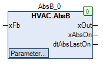

AbsB (FB)¶
FUNCTION_BLOCK AbsB
Kurzbeschreibung¶
Antiblockierschutz für ein binäres Signal
Darstellung¶

Schnittstellen¶
Eingänge¶
Name Datentyp Wertebereich Initialwert Funktion xFb BOOL Betriebsmeldung
Ausgänge¶
Name Datentyp Wertebereich Initialwert Funktion xOut BOOL Freigabe - Ausgang xAbsOn BOOL Anzeige - Blockierschutzprozess dtAbsLastOn DATE_AND_TIME Startdatum/-zeitpunkt der letzten Blockierschutzprozesses
Sollwerte / Parameter¶
Name Datentyp Wertebereich Initialwert Funktion tMinFbTime TIME T#30s Minimale Betriebsdauer tTime TIME 120s Zeitdauer des Blockierschutzprozesses eDay eDoW eDow.Montag Wochentag des Blockierschutzprozesses todStartTime TOD 08:00:00 Uhr Startzeitpunkt des Blockierschutzprozesses
Funktionsbeschreibung¶
Allgemeines¶
Dieser Funktionsbaustein dient zur Überwachung der Betriebsmeldung xFb auf Aktivität. Der Prüfzeitraum umfasst dabei jeweils 168 Stunden ( = 1 Woche ).
Die Betriebsmeldung xFb ist aktiv, falls er einmal im Prüfzeitraum während der minimalen Betriebsdauer tMinFbTime durchgehend aktiv ist.
Der Blockierschutzprozess wird damit unterbunden, die Prüfzeit startet erneut.
Falls keine Betriebsmeldung vorhanden ist, kann alternativ die Anforderung / Freigabe angeschlossen werden.
Wurde während des Prüfzeitraums keine Aktivität erfasst, so wird der Blockierschutzprozess ( Freigabe - Ausgang xOut = TRUE )
mit der Zeitdauer tTime am Wochentag eDay zur Uhrzeit todStartTime ausgelöst.
Gleichzeitig startet die Prüfzeitdauer erneut.
Die erstmalige Auslösung der Blockierschutzprozesses kann je nach den relevanten Einstellungen ( Wochentag eDay und todStartTime ) verzögert sein.
Beispiel
Prüfzeit am Dienstagmorgen beendet, Auslösung des Blockierschutzprozesses erst am kommenden Montag.
Am Ausgang dtAbsLastOn steht das Startdatum und der Startzeitpunkt der letzten Blockierschutzprozesses zur Verfügung.
Voraussetzung für den Einsatz des Funktionsbausteins AbsB
Zur korrekten Funktion ist der Einsatz des Funktionsbausteins TimeRead mit xEn = TRUE erforderlich.
Freigabe - Ausgang xOut¶
xFb Blockierschutzprozess xOut Hinweise X FALSE FALSE Blockierschutzprozess nicht aktiv X TRUE TRUE Blockierschutzprozess aktiv
Legende: X = beliebig
Anzeige - Blockierschutzprozess xAbsOn¶
xFb Blockierschutzprozess xAbsOn Hinweise X FALSE FALSE Blockierschutzprozess nicht aktiv X TRUE TRUE Blockierschutzprozess aktiv
Legende: X = beliebig
Sollwert / Parameter eDay¶
Die Blockierschutzfunktion kann durch die Einstellung eDay = eDow.Inactive generell gesperrt werden.
Sollwert / Parameter tTime¶
Die Blockierschutzfunktion kann durch die Einstellung tTime = 0s generell gesperrt werden.
Visualisierung¶
Codesys¶
- InOut:
Scope Name Type Initial Comment Input xFb BOOL Betriebsmeldung tMinFbTime TIME TIME#30s0ms Minimale Betriebsdauer tTime TIME TIME#2m0s0ms Zeitdauer des Blockierschutzprozesses eDay eDoW eDow.Monday Wochentag des Blockierschutzprozesses todStartTime TOD TIME_OF_DAY#8:0 Startzeitpunkt des Blockierschutzprozesses Output xOut BOOL Freigabe - Ausgang xAbsOn BOOL Anzeige - Blockierschutzprozess dtAbsLastOn DT Startdatum/-zeitpunkt der letzten Blockierschutzprozesses